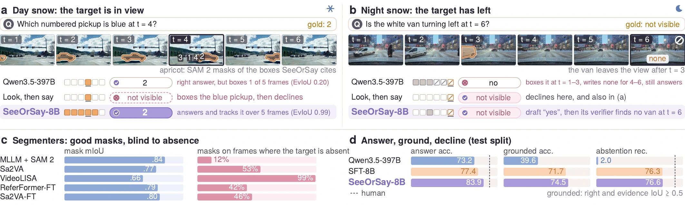
Language-driven perception is most needed in adverse weather and least reliable there. On real winter driving clips, four of five public referring segmenters place a mask on 42–99% of the frames in which the target is absent: what is missing is knowing what has and has not been seen. We introduce SeeOrSay-Bench, 29,876 questions on 13,574 real driving clips in snow, fog, rain and night, with pixel evidence for every answer and 17.5% unanswerable test questions (target absent, hidden or ambiguous). Across 14 vision-language models of up to 397B parameters, at most 41% of the answers are correct and grounded, and the general-purpose models decline almost none; fine-tuning closes much of this gap but learns to decline by question type. SeeOrSay makes declining a consequence of the evidence: the model drafts an answer, boxes every matching candidate and verifies the draft against them. We prove that a verifier trained on gold sequences is blind to the draft it checks, and train it instead on the model's own drafts, labelled against the gold; this raises the AUROC of detecting wrong drafts from 0.53 to 0.93. With an 8B backbone and one decoding pass, SeeOrSay improves accuracy by 6.5 and grounded accuracy by 2.8 points over its fine-tuned baseline and nearly halves false abstention on identification questions; with a threshold on its verdict, it declines 86% of the unanswerable questions (baseline: 76%) with no more false abstention.
SeeOrSay on real test clips
Each video plays the six frames of a real test clip (apricot: SAM 2 masks of the boxes SeeOrSay-8B cites), then shows the real outputs of Qwen3.5-397B, the look-then-say baseline and SeeOrSay-8B: draft, verdict and final answer. Click to enlarge.
One pass: answer, look at every candidate, verify
A token-by-token replay of the real output of SeeOrSay-8B on four test clips. Boxes appear on their frames as the model writes them in <look>; the verdict then decides whether to answer, revise or decline.
SeeOrSay-Bench
Built from per-frame target masks of real winter driving clips: a visibility state for every target and frame, templates in six families with gold answers and pixel evidence, blind-answerable questions dropped, and every test question checked by two annotators.
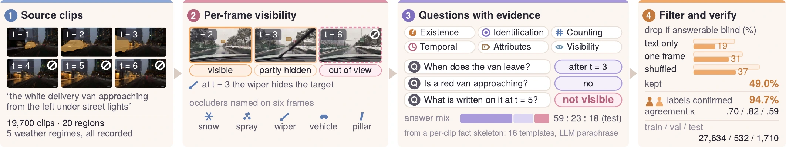
| Benchmark | Input | Weather | Grounding | Unanswerable |
|---|---|---|---|---|
| ACDC | image | real | dense mask | — |
| DriveLM-nuScenes | frames | — | 2D points | — |
| DriveBench | image | synthetic | — | — |
| ObsDriveBench | frames | real | — | sensor |
| NExT-GQA | video | — | time span | — |
| TOC-Bench | video | — | — | object |
| SeeOrSay-Bench | video | real | mask per frame | instance |
SeeOrSay-Bench is the only one that checks the pixel evidence behind each answer and accepts “not visible” as a correct answer, on real adverse-weather video.
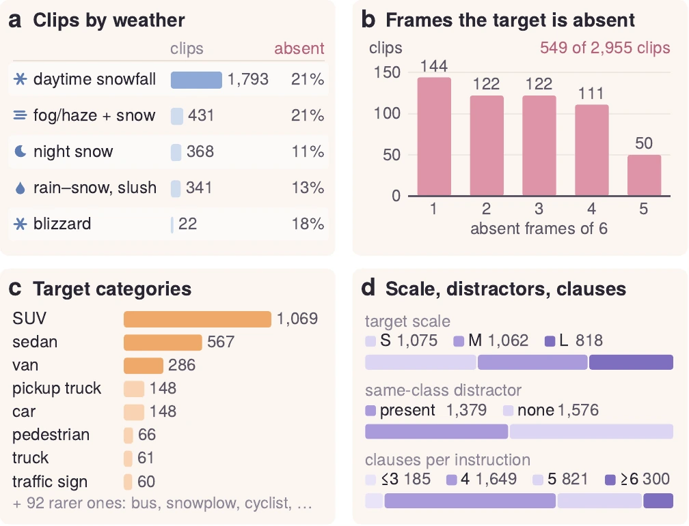
Declining as a consequence of the evidence
SeeOrSay keeps the architecture of a fine-tuned video MLLM and changes what the model writes and what its verifier learns from.
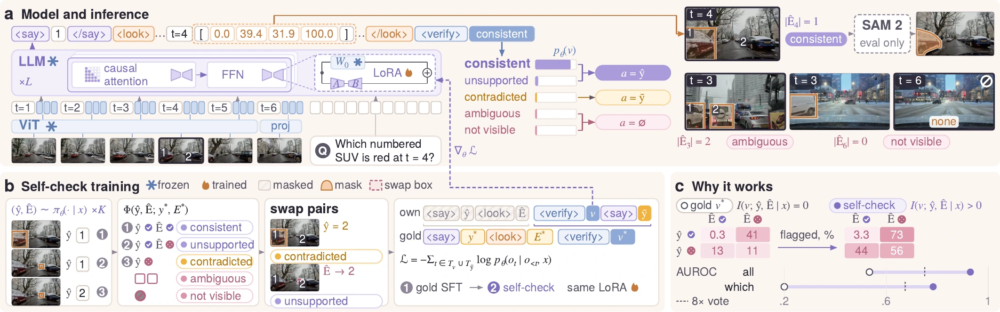
Set-valued evidence
In the asked frame, <look> lists a box for every matching candidate. An ambiguous question yields two or more boxes; an absent target yields none, with the last frame it was seen. Declining follows from the cited set.
Answer-first verification
The model states its answer and its candidates first, then writes a verdict in the same decoding pass: consistent, unsupported, contradicted (then a revision), ambiguous or not visible.
Self-checked verification
Trained on gold sequences, a verifier never sees a wrong draft and is provably blind to it (Prop. 1). We train it on the model's own drafts, labelled against the gold, plus counterfactual swaps, with loss on the verdict and revision only (Prop. 2). AUROC for wrong drafts: 0.53 → 0.93.
self-checked I(v; d | x) = H(v | x) > 0
Answer, ground, and decline
SeeOrSay-Bench test split (1,710 questions). GAcc: answer correct and evidence IoU ≥ 0.5; AR / FAR: abstention recall / false abstention rate; CAS combines the two.
| Model | Size | Acc | EvIoU | GAcc | AR | FAR ↓ | CAS |
|---|---|---|---|---|---|---|---|
| Zero-shot | |||||||
| Qwen2.5-VL | 72B | 68.3 | 48.6 | 36.4 | 4.3 | 1.0 | 8.3 |
| Qwen3-VL | 32B | 72.2 | 53.6 | 40.7 | 2.7 | 0.6 | 5.2 |
| InternVL3.5 | 38B | 66.1 | 10.1 | 10.2 | 0.7 | 0.1 | 1.3 |
| GLM-4.6V | 106B | 71.2 | 51.0 | 37.1 | 1.0 | 0.1 | 2.0 |
| Qwen3-VL | 235B | 73.6 | 47.1 | 38.6 | 1.3 | 0.4 | 2.6 |
| Qwen3.5 | 397B | 73.2 | 56.9 | 39.6 | 2.0 | 0.5 | 3.9 |
| Open-o3-Video | 7B | 43.6 | 15.6 | 4.6 | 3.3 | 1.5 | 6.5 |
| DriveLMM-o1 | 8B | 24.4 | 3.5 | 1.8 | 54.2 | 44.2 | 55.0 |
| Fine-tuned on SeeOrSay-Bench | |||||||
| Look, then say | 7B | 74.7 | 73.9 | 67.9 | 78.3 | 9.4 | 84.0 |
| Look, then say | 8B | 77.4 | 76.9 | 71.7 | 76.3 | 9.6 | 82.7 |
| SeeOrSay-7B | 7B | 82.0 | 75.0 | 70.5 | 77.9 | 6.5 | 85.0 |
| SeeOrSay-8B | 8B | 83.9 | 78.0 | 74.5 | 76.6 | 5.8 | 84.5 |
| SeeOrSay-8B + threshold | 8B | 80.9 | 78.0 | 72.9 | 86.0 | 9.1 | 88.4 |
| Human (200 q.) | — | 90.7 | — | — | 90.9 | 3.8 | 93.4 |
Selected rows; the paper's Table 2 lists all 14 zero-shot models. “+ threshold”: the same outputs, declining when the verdict's abstention score reaches a threshold set on validation data.
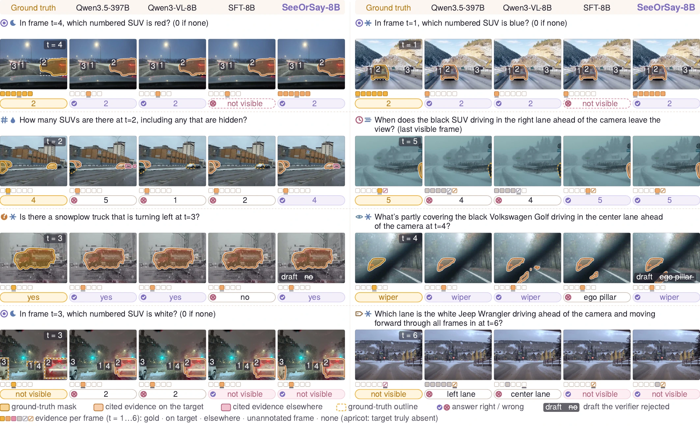
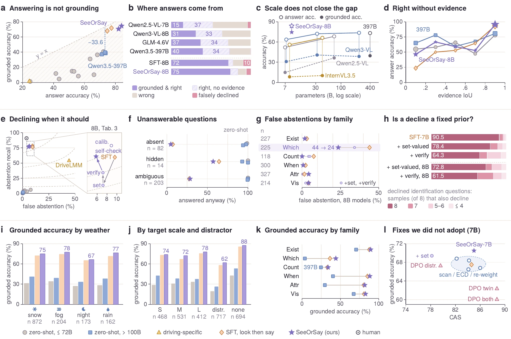
More real examples, failures included
All real test questions with the real outputs of the models. The family × weather grid is drawn at random per cell, not by outcome. Click to enlarge.
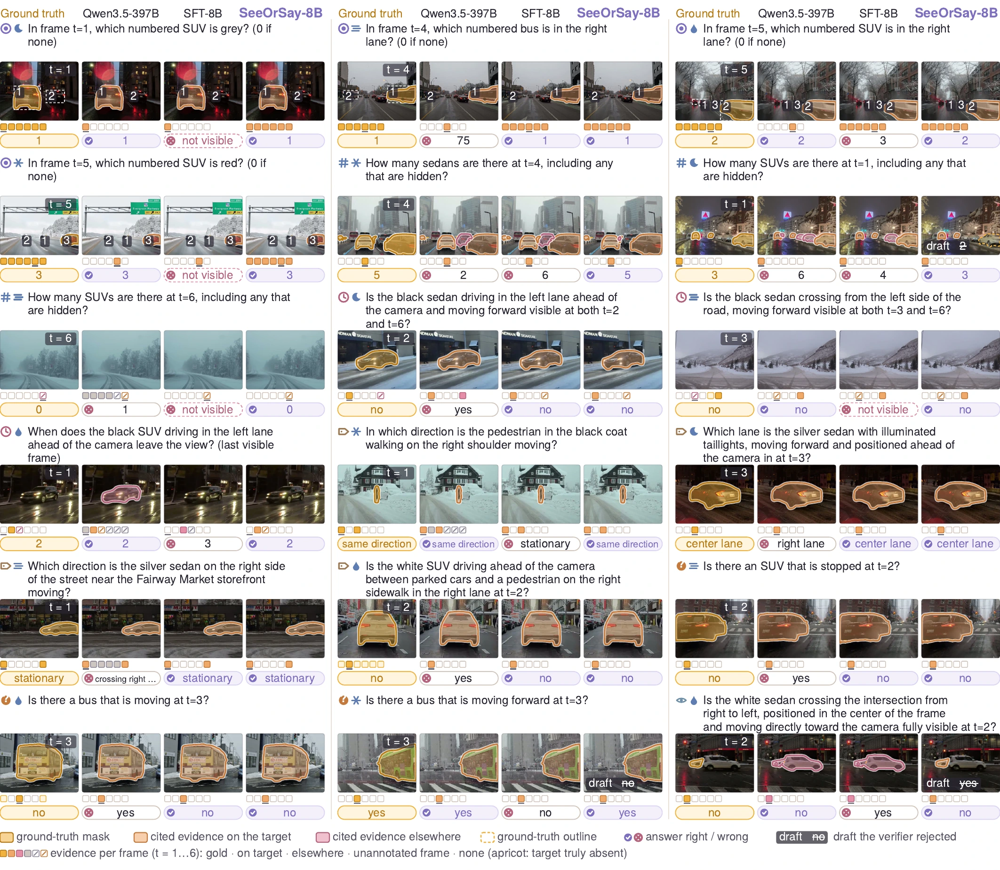
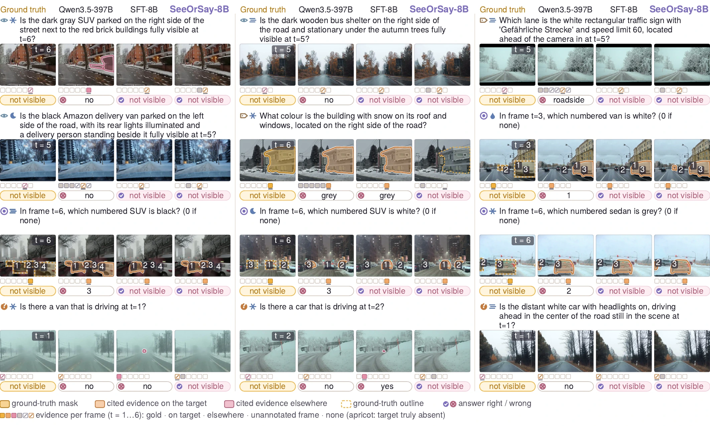
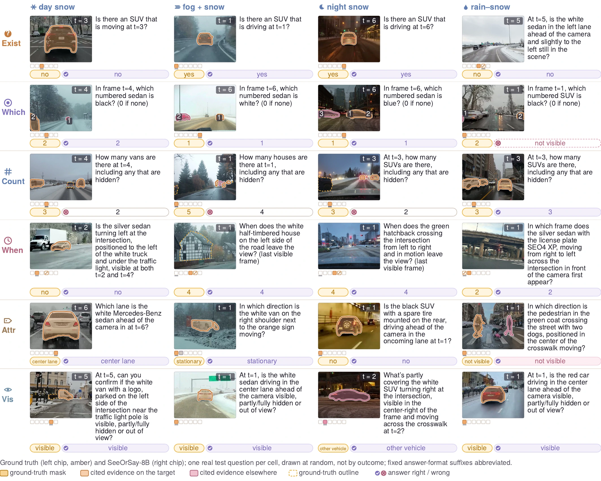
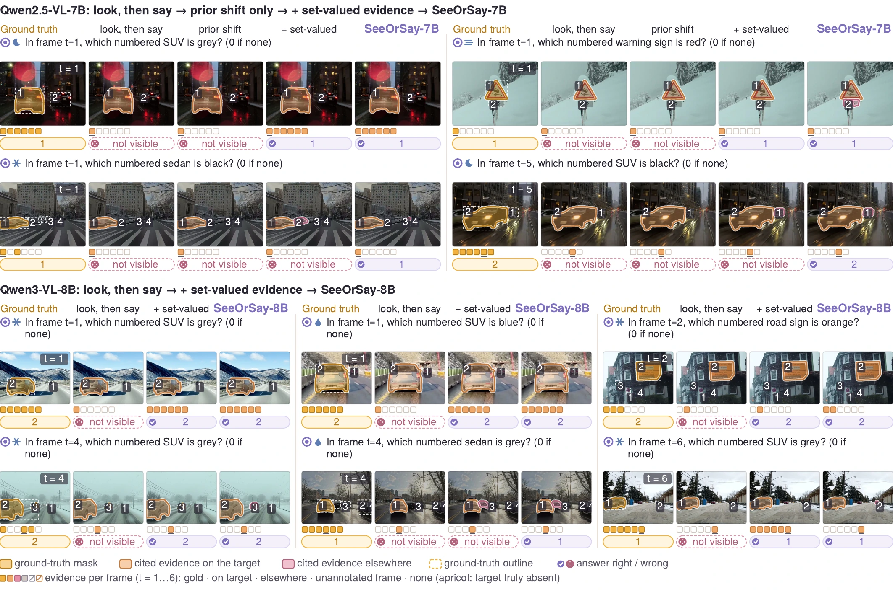
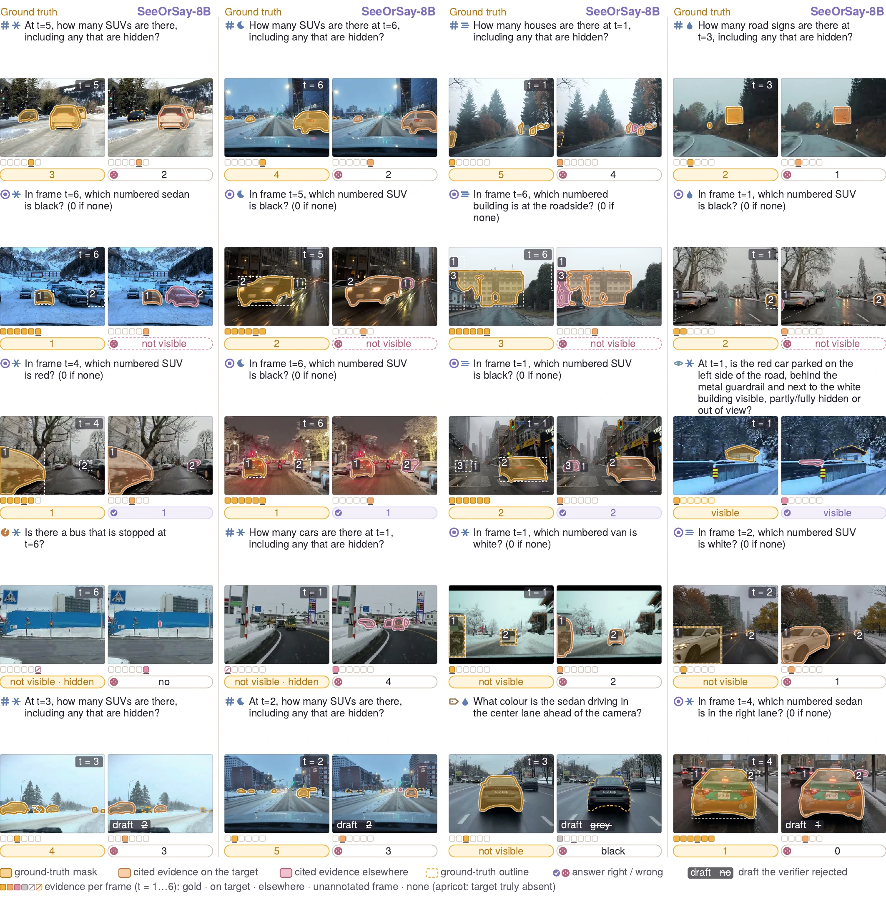
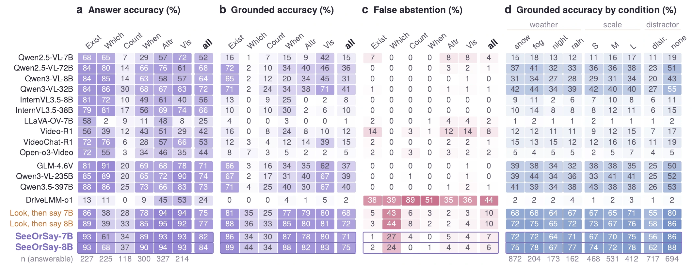
Code, models and data
Code, model weights and SeeOrSay-Bench will be released upon acceptance.